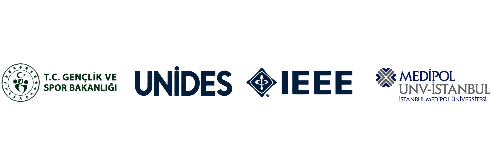

Görseller yükleniyor…
Görseller arasında geçiş için kaydır, sürükle veya numaralara dokun.

SürdürülebilirlikGezegenimizin geleceği için hazırlanan çalışmaları keşfet.
Görseller arasında geçiş için kaydır, sürükle veya numaralara dokun.